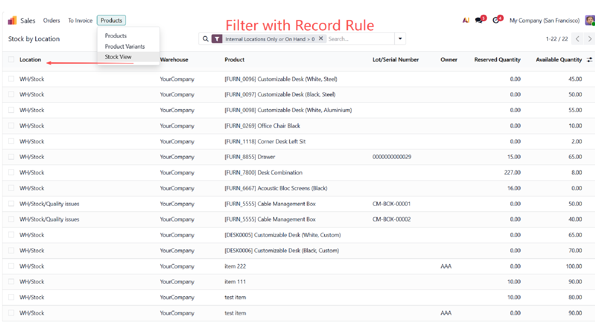
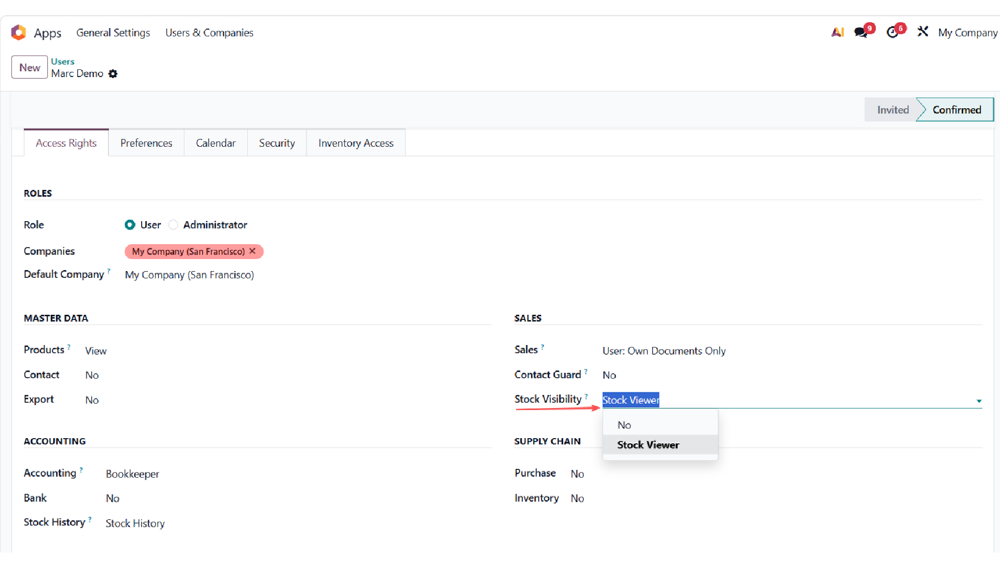

Native Odoo couples inventory data visibility to the
stock.group_stock_user role, which also grants
access to receipts, transfers, scrap, and stocktake operations.
This module adds two independent permission groups that each
expose a read-only data surface with a dedicated menu, without
unlocking any of Inventory's operational screens.
Grants read-only access to stock.quant,
stock.location, stock.warehouse,
and stock.lot. Adds a Stock View
menu under the Sales app showing current on-hand quantities
grouped by location. The view filters to internal locations
with positive on-hand by default.
Owner and Lot/Serial columns auto-hide when the corresponding Odoo features (consignment tracking, lot tracking) are not enabled. The On Hand quantity column is also added to the product variants list for users in this group.
Grants read-only access to stock.move,
stock.move.line, stock.location,
stock.warehouse, stock.lot, and
stock.picking.type. Adds a Consignment
Moves menu under Accounting with a read-only
history list.
A built-in Consignment Only filter matches moves whose underlying move lines carry an owner, for reviewing vendor-owned inbound and outbound flow. An Owner(s) column displays the consigning vendors on each move.

A new Accessible Locations field on the user form allows administrators to scope each user to a subset of stock locations. When left empty, the user sees all locations in their companies. Selecting a parent location automatically includes all of its children.
The restriction is enforced via record rules and applies to both groups. System administrators are exempt.
| Group | Location | Access granted |
|---|---|---|
| Sales Stock Viewer | User form, Sales privilege | Read on quant / location / warehouse / lot; Sales → Stock View menu; On Hand on product variants list |
| Accounting Stock History | User form, Accounting privilege | Read on move / move-line / location / warehouse / lot / picking-type; Accounting → Consignment Moves menu |
Neither group implies any other group. They are assigned alongside the user's existing Sales or Accounting roles.
res.users)suite_inventory_access_landed_cost, which
auto-installs when stock_landed_costs is present.
Inventory Access — Landed Cost (Bridge)
(suite_inventory_access_landed_cost) auto-installs
when both this module and stock_landed_costs are
present. It adds landed cost RWCD access and an Accounting menu
for the Stock History group. Available separately on the Apps
Store.
stock, sales_team,
account.
Released under the GNU Lesser General Public License v3
(LGPL-3.0-or-later). The full license text is included in the
LICENSE file shipped with the module.
Maintained by SuiteState. For questions, bug
reports, or feature requests, visit
suitestate.com or contact
hello@suitestate.com.